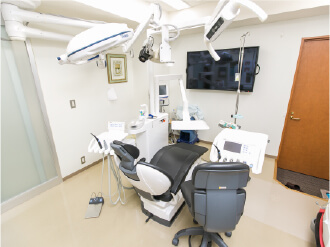
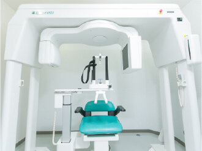
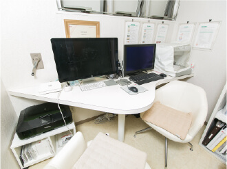
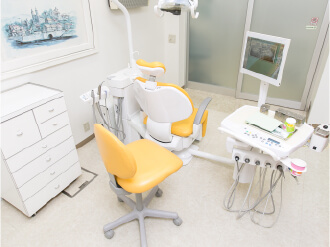
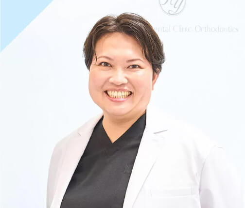

術前写真
術後写真
下あご・オールオン4（○○代 ○性）
- お悩み
- （例）入れ歯が合わず、食事のたびに痛みがあった
- 治療内容
- （例）残存歯の抜歯、オールオン4（インプラント4本）、当日仮歯装着
- 治療期間
- （例）約○か月／通院○回
- 費用
- （例）○,○○○,○○○円（税込）
- リスク・副作用
- 術後の腫れ・痛み・内出血、インプラント周囲炎など。詳しくはリスク・副作用をご覧ください。
入れ歯・グラグラの歯でお悩みの方へ
オールオン4（All-on-4）
4本のインプラントで、片あごすべての歯を支える治療法です。取り外し式の入れ歯と違い、歯をしっかり固定するため、ずれ・外れ・痛みのストレスを軽減できます。
オールオン4（片あご）
1,925,000円（税込）
税抜 1,750,000円
デンタルローン 月々19,000円台〜分割・ボーナス併用もOK
※手術費用（CT撮影・画像診断を含む）。麻酔・上部構造などは別途。費用の詳細
※手術当日は固定式の仮歯を装着します。骨の状態などにより、当日に装着できない場合があります。仮歯の期間は、やわらかいお食事から始めていただきます。
※2023年1月〜12月の当院の実績
ABOUT
わずか4本のインプラントで、片あごすべての歯（10〜12本分）を支える治療法です。
1本ずつインプラントを入れる方法に比べ、手術の負担や費用を抑えやすいのが特長です。
POINT 1
片あごの歯を最少4本のインプラントで支えます。埋め込む本数が少ないため、体への負担や費用を抑えやすくなります。
POINT 2
インプラントを埋め込んだその日に、固定式の仮歯を装着します※。歯のない期間がなく、見た目や会話の心配も少なく過ごせます。
POINT 3
奥のインプラントを斜めに埋め込むことで、骨の少ない部分を避けられます。骨を増やす手術（骨造成）が不要になるケースもあります。
※骨の状態などにより、当日に仮歯を装着できない場合があります。
COMPARE
歯をすべて、または多くの歯を失った場合の、代表的な3つの治療法を比べました。
| 項目 | オールオン4 | 1本ずつの インプラント | 総入れ歯（保険診療） |
|---|---|---|---|
| 歯の固定 | 固定式 | 固定式 | 取り外し式 （歯ぐきに乗せる） |
| 噛み心地 | しっかり噛める | しっかり噛める | ずれやすく、硬いものは噛みにくい |
| インプラントの本数（片あご） | 4本（状態により6本） | 8〜12本程度 | なし |
| 歯が入るまで | 手術当日に仮歯※ | 仮歯まで数か月かかることも | 型取りから数週間 |
| 骨が少ない場合 | 斜めの埋入で骨造成を避けられる場合も | 骨造成が必要になることが多い | — |
| 費用 | 本数が少ない分、抑えやすい | 本数が多く高額になりやすい | 保険適用で安価 |
| お手入れ | 歯みがき＋定期メンテナンス | 歯みがき＋定期メンテナンス | 毎日取り外して洗浄 |
| 注意点 | 外科手術が必要。精密検査による適応診断が必要 | 手術の回数・期間が長くなることがある | 調整や作り直しが必要になることがある |
※骨の状態などにより、当日に仮歯を装着できない場合があります。いずれの治療法にもメリット・デメリットがあります。お口の状態に合った方法をご提案します。
FEATURES
JR・名鉄「名古屋駅」3番出口から徒歩2分。手術当日や術後の通院、ご家族の付き添いにも便利です。愛知・岐阜・三重からも通いやすい立地です。
すべての手術に麻酔医が立ち会い、うとうとした状態で手術を受けられる静脈内鎮静法や、全身麻酔に対応しています。治療前から全身の状態も管理します。
歯科用CTと診断ソフトで事前にシミュレーション。手術中はX-Guide（エックスガイド）で埋め込む位置・角度・深さをリアルタイムに確認します。インプラントはノーベルバイオケア社製を使用しています。
外科手術であるインプラント治療のために、専用のオペ室を完備。衛生面に配慮した環境で手術を行います。
斜めの埋入に加え、上あごの骨が少ない方には頬骨を利用する「ザイゴマインプラント」も選択肢になります。他院で難しいと言われた方もご相談ください。
万が一インプラントに不具合が生じた場合は、10年間、無料で再治療を行います。※半年に1度の定期検診を受けていただくことが条件です。




FOR YOUR PEACE OF MIND
点滴で鎮静薬を投与し、うとうととリラックスした状態で手術を受けていただく方法です。緊張や恐怖心がやわらぎ、手術中の記憶がほとんど残らないこともあります。
当院では麻酔専門医が常駐し、すべての手術に麻酔医が立ち会います。全身麻酔にも対応していますので、ご状況とご希望に合わせてご提案します。
※全身の状態により、ご利用いただけない場合があります。費用は別途かかります。
Q何歳まで治療を受けられますか？
年齢だけを理由に治療ができないということはありません。全身の健康状態と骨の状態をもとに判断します。
Q糖尿病や高血圧があっても大丈夫？
状態が安定していれば治療できる場合があります。必要に応じて主治医の先生と連携して進めます。
Q手術のあとは痛みますか？
痛みや腫れには個人差があります。痛み止めをお出しし、術後の経過も丁寧に確認します。
PRICE
オールオン4は自由診療（保険適用外）です。
ご不安のないよう、費用とお支払い方法をご説明します。
オールオン4 手術費用（片あご）
1,925,000円（税込）
税抜 1,750,000円／CT撮影・画像診断の費用を含みます
麻酔（静脈内鎮静法・全身麻酔）や上部構造（最終的な歯）などの費用が別途かかります。
お口の状態によって総額が変わるため、診査・診断の結果をもとに、治療を始める前に総額をご説明します。ご納得いただいてから治療を始めます。
お支払い方法：現金／クレジットカード（VISA・Mastercard・JCB・American Express・Diners Club）／デンタルローン（均等払い・ボーナス併用）
デンタルローン
月々19,000円台〜
最大120回払いに対応
※ローン会社の審査があります。月々のお支払額は、お支払い回数・金利・頭金などにより異なります。
医療費控除
税金の還付・減額
確定申告で受けられる場合があります
※1年間（1月〜12月）の医療費が10万円を超えた場合が対象です。生計を一にするご家族の医療費も合算できます。
10年保証
再治療は無料
万が一インプラントに不具合が生じた場合
※半年に1度の定期検診を受けていただくことが条件です。
医療費控除でどのくらい税金が戻る・減るのか、目安を計算できます。
合計 約368,832円が戻る・軽くなる目安
※控除額＝医療費−10万円（上限200万円）で試算。総所得金額等が200万円未満の方は、10万円ではなく所得の5%を差し引きます。納めた税額を超えて戻ることはありません。実際の金額は、ほかの控除や所得の状況により異なります。詳しくは税務署・税理士にご確認ください。
FLOW
ご相談から最終的な歯が入るまで、一つひとつ丁寧にご説明しながら進めます。
専門のカウンセラーと歯科医師が、お悩みやご希望を伺い、オールオン4の特徴・費用・期間の目安をご説明します。ご家族の同席も歓迎です。
CTで骨の量・質、神経や血管の位置を立体的に確認し、オールオン4が可能かを診断します。初回のご相談・CT撮影は無料です。
3D診断ソフトで、お口の状態に合った治療計画をご提案。総額・お支払い方法・リスクを明確にご説明し、ご納得いただいてから手術日を決めます。
抜歯・インプラントの埋め込み・固定式の仮歯の装着までを同じ日に行います※。手術時間は約30分〜3時間（本数や骨の状態により異なります）。麻酔医が立ち会い、静脈内鎮静法・全身麻酔にも対応しています。
その日のうちに固定式の歯でインプラントと骨がしっかり結合するのを待ちます（期間は骨の状態により異なります）。この間も固定式の仮歯でお過ごしいただけます。
型取りから約2週間で、最終的な歯を装着します。
インプラントを長くお使いいただくために、定期的な検診とクリーニングを行います。半年に1度の定期検診で、10年保証の対象になります。
※骨の状態などにより、当日に仮歯を装着できない場合があります。
CASES
DOCTORS

「自分の親や子供の治療をしているつもりで丁寧に行う」
これは、私の歯科人生におけるモットーです。常に最新かつ安定した技術力をすべての患者さんに提供できるように心がけております。
インプラント治療は、埋入することだけでなく、そのインプラントが10年20年長持ちする秘訣があります。私たちは常に新しい情報を学び、技術の刷新に邁進し成長しつづける努力をしております。
諦めないでください。当院では初回の無料カウンセリングも実施していますので、お気軽にご相談ください。

麻酔医（医療法人スマイル）
河合 温子
「患者さんが『やって良かった』と思っていただく治療を心がけております。口腔内は身体の入り口です。咀嚼の大切さ、食べる喜びを感じて、より健康な生活が送れると考えております。」

医療法人スマイル 理事長
尾崎 隆
FAQ
手術は局所麻酔を行ったうえで進めます。当院では麻酔専門医が常駐し、すべての手術に麻酔医が立ち会います。痛みや恐怖心が心配な方には、うとうとした状態で手術を受けられる静脈内鎮静法や、全身麻酔もご用意しています。術後の痛み・腫れには個人差がありますが、痛み止めをお出しし、経過を丁寧に確認します。
年齢だけを理由に治療ができないということはありません。全身の健康状態や骨の状態をもとに、治療が可能かを判断します。ご家族と一緒のご相談も歓迎です。
病状が安定していれば治療できる場合があります。必要に応じて主治医の先生と連携します。骨粗しょう症のお薬（ビスホスホネート製剤など）を服用中の方は、治療に影響する場合があるため、カウンセリング時に必ずお知らせください。お薬手帳をお持ちいただくとスムーズです。
オールオン4は奥のインプラントを斜めに埋め込むことで、骨の少ない部分を避けて治療できる場合があります。上あごの骨が少ない方には、頬骨を利用するザイゴマインプラントという選択肢もあります。まずはCTで骨の状態を確認させてください。
オールオン4の手術費用は片あご1,925,000円（税込。税抜1,750,000円）で、CT撮影・画像診断の費用を含みます。麻酔や上部構造（最終的な歯）などの費用は別途かかります。お口の状態により総額が変わるため、診査・診断の結果をもとに、治療を始める前に総額をご説明します。
デンタルローンで月々19,000円台からの分割払いが可能です（最大120回）。均等払いのほか、ボーナス併用もお選びいただけます。ローン会社の審査があり、月々のお支払額は回数・金利・頭金により異なります。クレジットカード（VISA・Mastercard・JCB・American Express・Diners Club）もご利用いただけます。
オールオン4の治療費は医療費控除の対象となります。1年間（1月〜12月）の医療費が10万円を超えた場合、確定申告で所得税の還付や住民税の減額を受けられる場合があります。生計を一にするご家族の医療費は合算でき、通院のための公共交通機関の交通費も対象です。シミュレーターで目安を計算できます。
手術は1日で行い、その日に固定式の仮歯を装着します（手術時間は約30分〜3時間。本数や骨の状態により異なります）。その後、インプラントと骨が結合するまでの治癒期間を経て、型取りから約2週間で最終的な歯を装着します。治癒期間や通院回数は骨の状態により異なるため、診断の際にご説明します。
固定式の仮歯を装着した後、やわらかいお食事から始めていただけます。仮歯の期間は、インプラントに負担をかけないよう硬いものは避けてください。
残すことが難しい歯は、手術当日に抜歯し、そのままインプラントの埋め込みと仮歯の装着を行うのが一般的です（お口の状態により異なります）。今お使いの入れ歯は、カウンセリングの際にお持ちください。
毎日の歯みがきに加えて、定期的なメンテナンスが必要です。インプラントの持ちは、日々のお手入れや定期検診の状況によって大きく変わります。当院では治療後も歯みがき指導と定期検診でサポートし、半年に1度の定期検診を受けていただくことを条件に、10年保証をお付けしています。
インプラントに万が一不具合が生じた場合、10年間は無料で再治療を行います。半年に1度の定期検診を受けていただくことが条件です。
喫煙は、インプラントと骨の結合や歯ぐきの健康に悪影響を与え、治療結果に影響する可能性があります。治療にあたっては禁煙をおすすめしています。
ご相談だけでももちろん大丈夫です。初回のご相談とCT撮影は無料で、治療を無理にお勧めすることはありません。ご説明を聞いたうえで、ご家族と相談してからお決めください。
RESERVE
今のお口の状態でオールオン4ができるのか。費用はいくらかかるのか。
治療を決める前に、まずは正確な情報を知ってください。
ご来院時にお持ちいただくと便利なもの
健康保険証／お薬手帳（服用中のお薬がある方）／今お使いの入れ歯
空き状況を見て、
そのままWeb予約
※予約システム（Apotool & Box）のページに移動します。ご希望の日時が埋まっている場合は、お電話（052-571-3345）でもご案内できる場合があります。
ACCESS
名駅歯科クリニック・矯正歯科
| 時間 | 月 | 火 | 水 | 木 | 金 | 土 | 日 |
|---|---|---|---|---|---|---|---|
| 9:30〜12:30 | ● | ● | ● | ● | ● | ／ | ／ |
| 14:30〜19:00 | ● | ● | ● | ● | ● | ／ | ／ |
休診日：土曜・日曜・祝日／治療の受付は診療終了の30分前まで